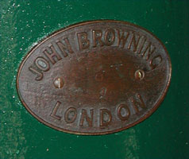
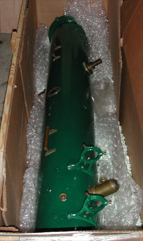
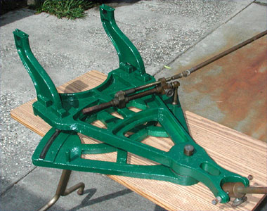
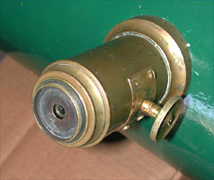

 Have you ever wondered what happened to the optical instruments used by the amateur watchers of the skies during the past 125 years or so? I have often done that, imagining myself looking at the Moon through the same instruments used by the great lunar observers of the past trying to see the Moon as they did. May I assume that you are familiar with the classic English lunar observers/writers Neison, Elger, Goodacre, and Wilkins & Moore. Right? You may ask why I am mentioning these gentlemen out of the hundreds of other amateur observers. I have their books, many of their lunar articles, and an original set of Goodacre's 1910 lunar charts, but I did not know until November 2000 that they had something in else common besides their lunar writings and love of the Moon.
|  |
The Browning race car green wrought-iron tube is 9.25 inches inside diameter and the green-tint soda-lime glass George With mirror is 8 inches in diameter. I have seen this particular instrument mentioned in the astronomical literature as being a 9.25-inch f/7.5 instrument, and I have also been told that it is an 8 inch instrument. Which is correct; 9.25 or 8 inches? I don't know, because it can be called by either size and be correct. In the Victorian era, Newtonian telescopes were labeled and sold by their aperture size and that now we use the diameter of the mirror. Neison refers to the telescope as a 9-1/3-inch instrument, which is its outside diameter.
|  |
George Henry With (1827-1904) was considered one of the best silver-on-glass mirror makers of the late 19th century. He was one of the leaders in the move from metal to glass telescope mirrors. The mirror was recently resilvered at Kitt Peak and tested at 1/25 wave. By profession, George With was a schoolmaster in Herford, England and made astronomical mirrors as a side business.
John Browning, F.R.A.S.(1835-1925) was one of the best telescope and spectroscope manufacturers of that time. He wrote numerous articles on astronomical instrument and a book on spectroscopes. Browning's family instrument company was in business for about 145 years, closing with his retirement in 1905.
If you would like to see a drawing of a sister telescope to mine, there is one in the Norman Lockyer Observatory in England, just follow the link. My telescope looks like the upper image. The drawing is from the 1876 John Browning Company catalog.
http://www.ex.ac.uk/nlo/news/nlonews/1995-10/9510-12.htm
I have been planning on how to make a new oak base for the telescope. I have some drawings of similar instruments and a photograph of a 10-inch With-Browning of the same era. A base has to be built before this nineteenth century telescope gets to feed on twenty-first century moon beams. I am also planning on building oak storage boxes for the tube, mount, and accessories.
|  |
I can hardly wait to observe the Moon in much the same manner as my lunar heroes Neison, Elger, Goodacre, and Wilkins through the same fascinating treasure of a telescope that they used.